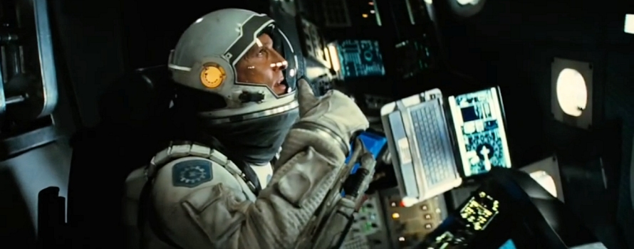
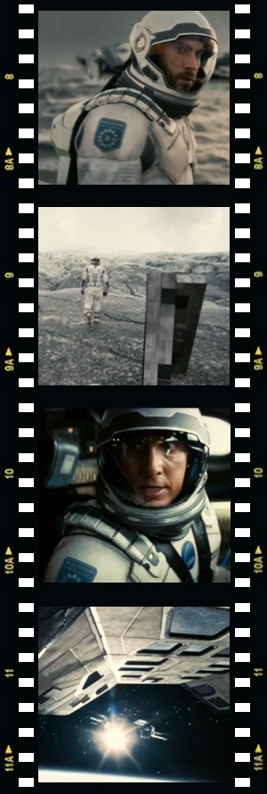
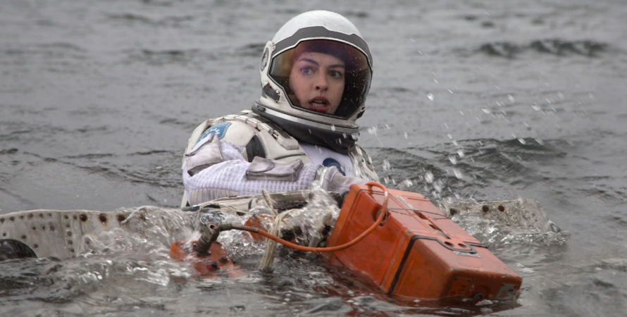
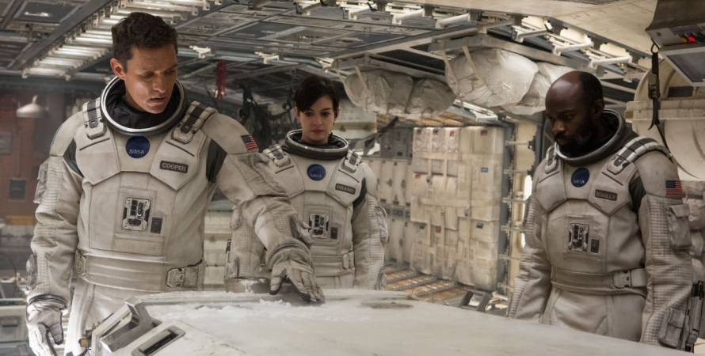

Interstellar, an epic science fiction film directed by Christopher Nolan, tells the story of a small team of astronauts led by a former NASA test pilot Cooper (Matthew McConaughey), who, after the Earth became nigh-on uninhabitable, joins biologist Amelia (Anne Hathaway), geographer Doyle (Wes Bentley), physicist Romilly (David Gyasi) and two AI robots, CASE and TARS aboard an experimental spacecraft Endurance on a daring expedition to a distant galaxy in search of a new habitable planet for the ailing humanity.
While the view that the other stars are similar to the Sun, and are likewise accompanied by planets, was put forward already in the 16th century by the Italian philosopher Giordano Bruno, until the early 1990s the existence of exoplanets was merely speculative, as there was no known method of detecting them. The first confirmed discovery of planets orbiting star other than our Sun came in 1992, and since then the floodgates of the new announcements have opened: close to 2000 exoplanets in over 1000 individual planetary systems have been detected by the end of 2014. Nowadays, new extrasolar planets are being discovered on an almost daily basis.
Detecting these distant worlds is one thing, but getting to them is a different matter entirely. The distances involved are enormous by any standards. The nearest known extrasolar planet, if confirmed, would be in a binary star system Alpha Centauri (this exoplanet, Alpha Centauri Bb, is disputed, and is not in the habitable zone around its star anyway) which is 4.4 light years from our Sun and the travel time required to reach this hypothetical world by a starship equipped with presently available propulsion systems would be thousands of years.
The crew of Endurance bypasses this, seemingly unsolvable, complication by taking a shortcut to the distant galaxy through a wormhole, which conveniently opens near Saturn. Now, this is the biggest sticking point in the script as the wormholes are not only merely hypothetical features of the spacetime, which were never actually confirmed, let alone observed, either directly or indirectly, but if they exist (and that is a big ‘if’) they are: a) far too small as they appear and disappear spontaneously at the sub-atomic scale; b) not traversable in both directions; c) inherently unstable and would collapse far too quickly for anything to cross from one end to the other, with everything that would have fallen through the event horizon of either universe inevitably crushed in the singularity.
But hey, this is science fiction, not science fact, so let's pretend for a while that the present theories are wrong and wormholes exist, are stable, and traversable in both directions.
As our intrepid explorers emerge out of the far end of the wormhole somewhere at the other side of the universe, their task is to explore 3 potentially habitable planets: Edmunds, Mann and Miller, named after the three astronauts of the previous NASA ‘Lazarus’ missions who surveyed them earlier. ‘Lazarus’ spacecraft were one-way-only missions – their pilots had no means of returning back to the Earth, but they collected crucial scientific data and left signal beacons allowing future missions to follow up on their discoveries.
They head first for the Miller planet which is orbiting a black hole named Gargantua, but they soon discover that the planet is so close to the black hole that the gravitational pull causes severe time anomaly, meaning that an hour on the surface of Miller is equal to seven years on Earth. Amelia, Cooper, Doyle and CASE descend to the planet in a shuttle and locate the beacon. Unfortunately, the planet proves inhabitable as it is entirely covered by a shallow ocean buffeted by enormous tidal waves caused by a gravitational pull of the Gargantua. Although discouraged by Cooper, Amelia attempts to recover the capsule with Miller's scientific data, when a huge wave hits, killing Doyle and almost drowning her. At the very last moment, Amelia is saved by CASE and the shuttle departs. Alas, the incident delays them and costs them dearly - when they return aboard the Endurance, they learn from (now much older) Romilly that 23 years have passed there.
Low on fuel, Endurance can now only visit one more planet before returning to the Earth. Amelia believes Edmunds planet has more promising data, but Cooper and Romilly are in favour of Mann planet, as Mann’s beacon is still transmitting. After some argument, the team votes for Mann. When they land, they follow the beacon and soon find cryonically frozen Dr. Mann within a small scientific station on a cold, icy, inhospitable world not unlike Earth’s Antarctica. It soon becomes apparent that Dr. Mann (Matt Damon) faked data about ‘his’ planet's habitability so that he gets rescued.
Before he entered his cryo-pod, Mann damaged his AI robot (to conceal the real Mann planet data), and to further cover up his deceit, he takes Cooper for an excursion to a remote area of ‘his’ planet where he breaks his spacesuit visor and leaves him to die. In the meanwhile, back at the scientific station, Romilly tries to repair Mann’s (unbeknown to him) booby-trapped AI robot and dies in an ensuing explosion.
Mann steals the shuttle and heads for Endurance. Amelia finds Cooper just before his oxygen runs out, rescues him with the other shuttle and they arrive at Endurance just in time to witness Mann attempting the, less-than-perfect, docking. Cooper sees that the docking seal is imperfect and warns Mann against opening the hatch. Needless to say, crazed Mann does not heed his warning and opens the hatch. The airlock depressurises, killing Mann and causing serious damage to Endurance. Amelia gives up any hope, but Cooper uses his test pilot skills to dock the shuttle to the other airlock of Endurance, which is now spinning uncontrollably, and uses the shuttle’s engines to stop Endurance from spinning and get it under control.
When they realise that, due to the extensive damage, they no longer have enough fuel or resources for the return journey to the Earth,

Cooper and Amelia come up with a plan to slingshot Endurance around Gargantua on a course for Edmunds. They also intend to use this once-in-a-lifetime opportunity and drop a probe with TARS into the black hole, hoping to collect some invaluable scientific data on the singularity. Cooper, realising that he can never return back to the Earth and see his children again (who would be now, courtesy of Gargantua, the same age as he), takes seemingly one-way ride into the black hole with the TARS. But he couldn't possibly fathom that what was supposed to be an end is just a beginning of his amazing adventure.